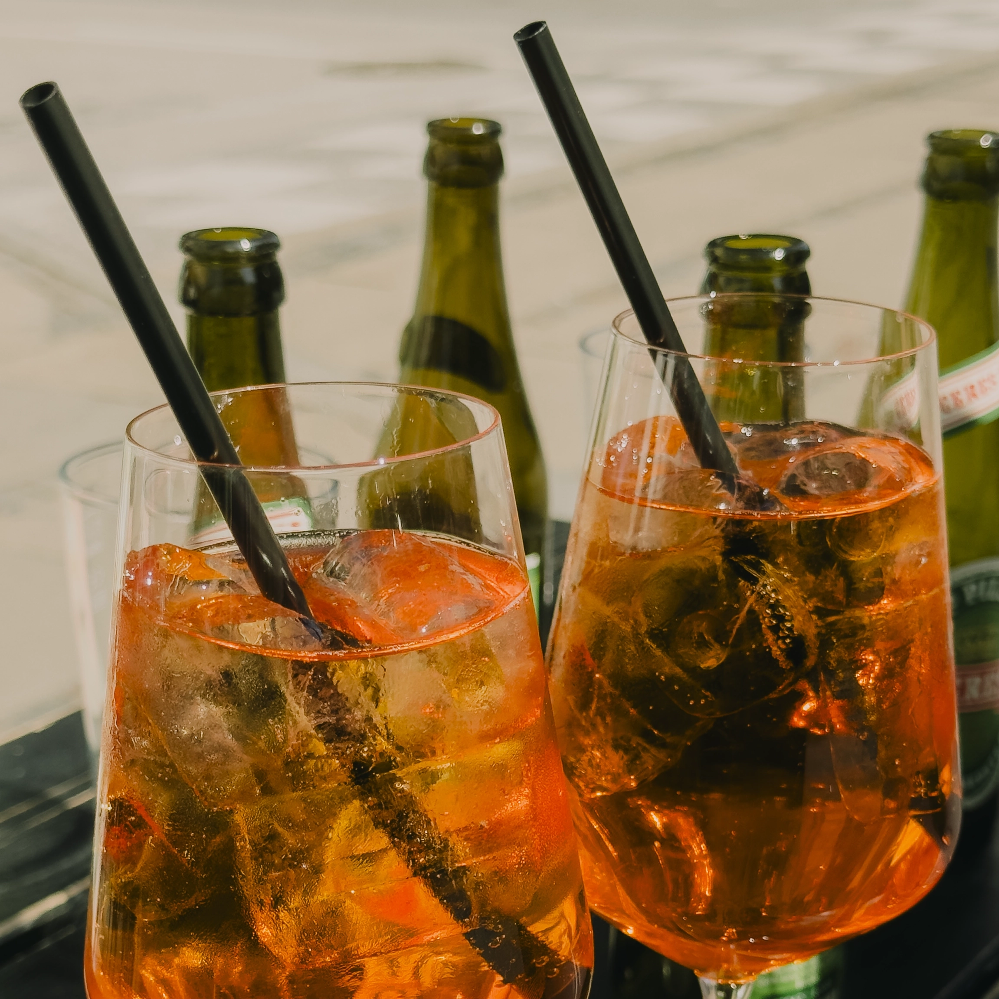
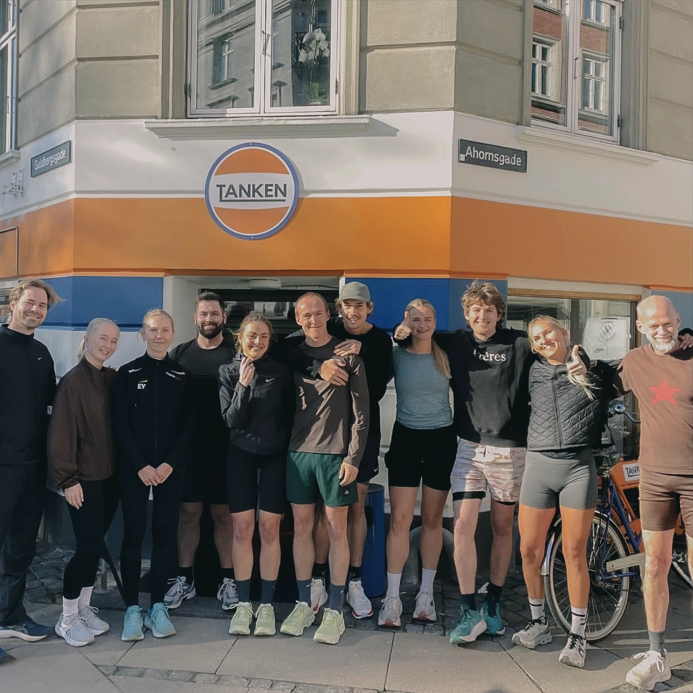

Begivenheder på Tanken
På Tanken sker der altid noget. Vi afholder løbende events, der bringer folk sammen - uanset om du er til quiz, løbeture eller en god fest med livemusik. Udover de faste events byder vi løbende på sjove oplevelser efter sæson. I Aarhus afholder vi Tæt på Tanken, hvor Tanken forvandles til en intim musik-session. I København åbner vi indimellem dørene op til release-fester
Følg med på vores Facebookgruppe for at holde dig opdateret på alt det, der sker på Tanken.
TænkeTanken
Hver onsdag klokken 19.00 i Guldbergsgade er det din tur til at brillere med, hvad der gemmer sig i din vidensbank.
Saml holdet, snup en kold pils og gør dig klar til at blive udfordret i alt fra totalt ligegyldig paratviden til planeter, geografi og andre ting, du troede, du havde glemt siden folkeskolen.Du og dine kompagnoner vil blive guidet af en tankpasser, der vil være din ekspert og aftenens quizMester.
Du behøver ikke være klog. Du behøver ikke have studeret. Mød blot op med en god portion selvtillid og måske en ven der er bedre til geografi end dig. Der er fede præmier på spil, god stemning og kolde øl inden for rækkevidde.
Drinks til en 50'er
Tanken Guldbergsgade byder på drinks til sølle 50 kr hver torsdag. Kom forbi, få en god start på weekenden, og vælg mellem Bloody Mary, Engin Tonic, Sprinkler, Tanken Spritz, Limoncello Spritz, Aperol Spritz, Tankens Dame og Vodka Maté.
Tanken runners
Hver tirsdag samles vi foran Tanken på Guldbergsgade og løber 5 km rundt i København i hyggeligt selskab. Tanken Runners er for alle, uanset om du er rutineret løber eller om dine løbesko mest har samlet støv siden nytårsforsætterne. Vi løber i snakketempo, fordi det vigtigste ikke er farten, men selskabet og den kolde velfortjente øl, der venter. Turen starter og slutter på Tanken, og efterfølgende er der gode priser i baren. Alle er velkomne, uanset form, fart og kondital. Det eneste krav er, at du møder op med godt humør.
Følg med og tilmeld dig på Tanken Runners' Facebookgruppe.
Tankens Festival Ekspress
Festivalstemning fra første sip. Tanken gør det, vi gør bedst: tanker dig op. Vi sørger for den bedst mulige start på festivalen med bus direkte til to af Danmarks største festivaler.
SMUK EXPRESS: Fra Graven i Aarhus til Smukfest
ORANGE EXPRESS: Fra Guldbergsgade i København til Roskilde Festival
Skal du med? Find linket til billetterne under Merch.